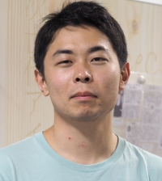

Yosuke Ashida (芦田 洋輔)
Postdoctoral Researcher, Department of Science, Kyoto University
Office: Kitashirakawaoiwake-cho, Sakyo-ku, Kyoto-shi, Kyoto 606-8502, Japan
E-mail: ashida.yosuke.2r [at] kyoto-u.ac.jp / assy.8594.1207.physics [at] gmail.com / yosuke.ashida [at] icecube.wisc.edu
Phone: 075-753-3852 (Japan)
ORCiD
Google Scholar
iNSPIRE
NASA/ADS
Research Interests
neutrino astronomy
multi-messenger astronomy
supernova neutrinos
diffuse supernova neutrino background
astrophysical neutrinos
ultra high energy cosmic rays
